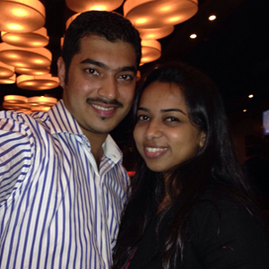

I mailed him my picture from my mom's id & wrote to him as my mom would :P
He sent me a friend request, I accepted it, we spoke to each other via chat.
We exchanged numbers & began chatting, what began then is never ending now…
We started talking like we knew each other for a very long time, late night chats led to sparks of love between the two of us. One find day Leeon just dropped by near my office & that's when we met for the very 1st time. I was a little skeptical for the meet as I was meeting someone without my family & it was pretty visible as I was very quiet & shy too... I barely spoke anything to him… but that meet was an unforgettable one for both of us...
I wouldn't say it was love at first sight, but we were definitely a couple at first sight. That night when we spoke, he suddenly popped up the question "Would you like to spend the rest of your life with me?" My heart beat rose & I said "YES" that's when we proposed to each other. Leeon met my parents on 1st February, till then I hadn't told my family that we had proposed to each other; all they knew was I was talking to him & needed time to take my decision...
My mom asked Leeon so what do you'll intend to do? And Leeon was surprised, that I hadn't told anything at home, that's when I gave my consent to my parents that I intend marrying Leeon. The appiness that I seen on my parents face added to my joy.
Our official 1st date after telling our family was at R city Mall, where we sat at coffee shop trying to know each other & our families. While he dropped me back home, we were fortunate to seek blessings from Sisters from Mother Teresa's Ashram they had come to visit our home. They blessed us & prayed over us, it was an amazing feeling of being blessed!!! But that wasn't all, the blessings continued untill the next day...
It was exam time, where I was to go to Leeon's place & meet his family pheww!! All nervous as it could be… but it went out all smooth…his parents also liked me & we both decided to pay a visit to Mount Mary Bandra to thank God for the gift of each other.
While we were praying, I met a family priest who was on visit there; I introduced him to Leeon & Fr. Was very happy for both of us & blessed us, and to my surprise Fr. knew Leeon as they came from the same place. Thus we began our journey seeking blessings!!!
And here we are two souls with but a single thought two hearts that beat as one!


{kind=link}
{kind=link}